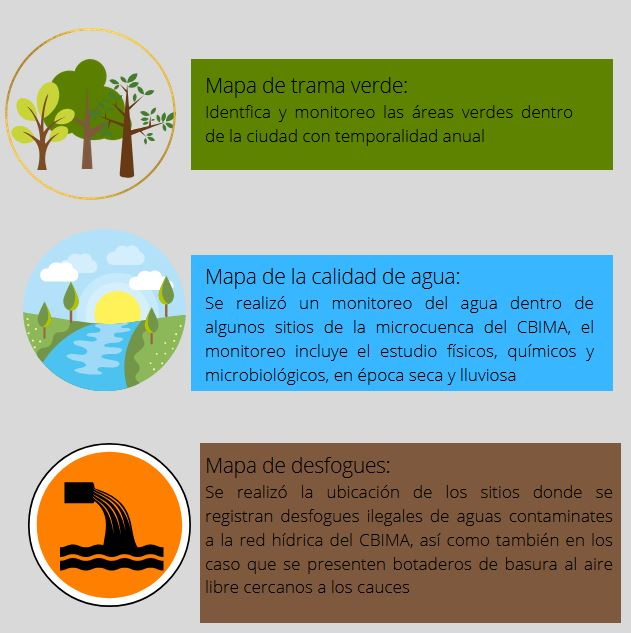
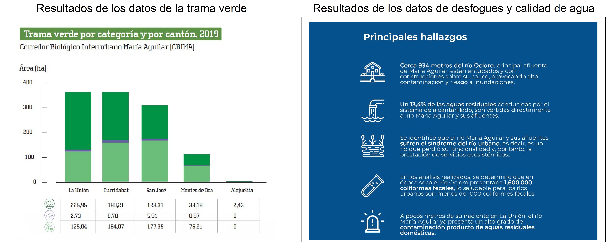

Menu Desplegable
Datos de la cartografía del CBIMA
El Programa de las Naciones Unidas para el Desarrollo (PNUD) en colaboracion con el Gobierno de la República, en conjunto con el MINAE y el Fondo Mundial del Medio Ambiente (GEF por sus siglas en inglés), están implementando el proyecto Conservando la Biodiversidad a través de la gestión sostenible en los paisajes de producción en Costa Rica (Conocido como Paisajes Productivos), con el objetivo de que como país, pueda demostrar que el desarrollo sostenible, no sólo es posible, sino que es rentable y que permite ser la vía para solucionar algunos desafíos complejos en términos de conservación de los bosques y de la biodiversidad, de la producción agropecuaria y el crecimiento urbano.
Para cumplir con estos objetivos el proyecto Paisajes Productivos ha elaborado diferentes productos, entre los cuales destacan la elaboración de cartografía:
 |
Principales resultados
 |